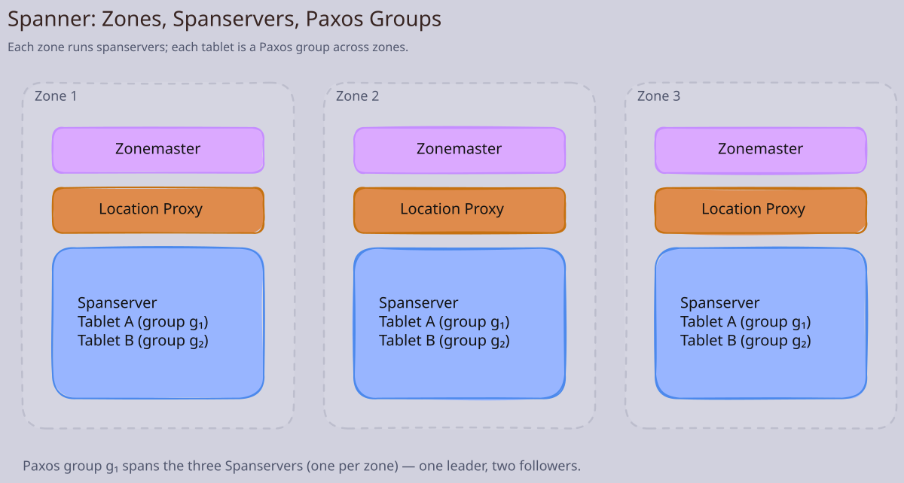
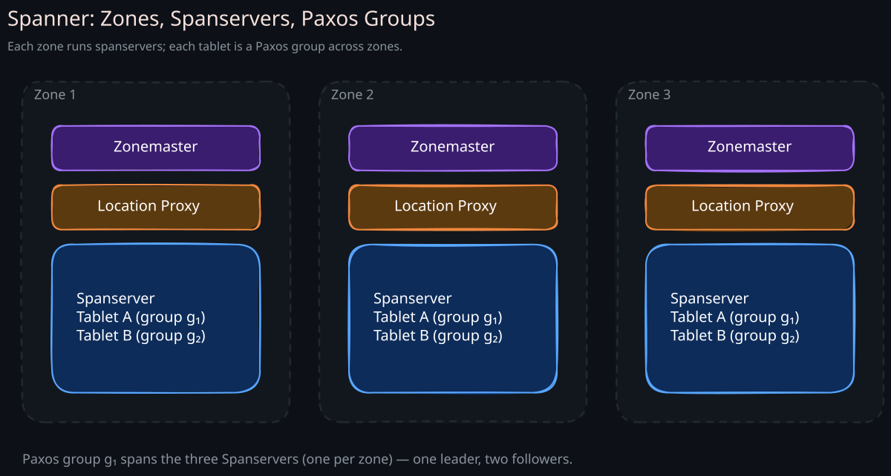
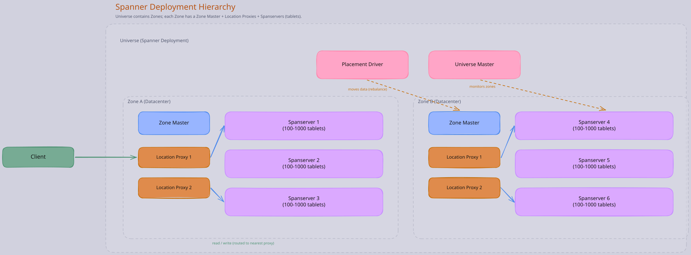
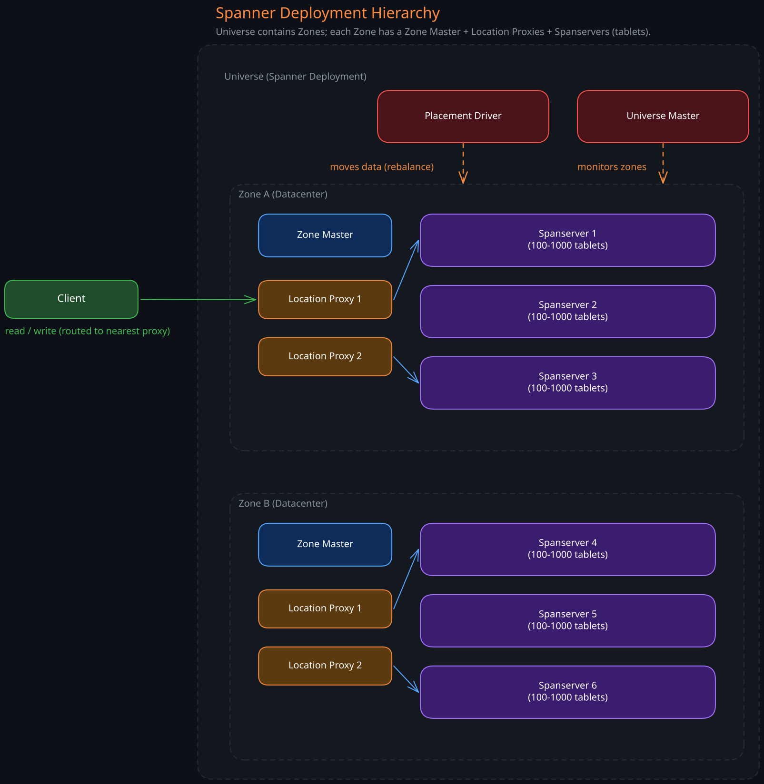
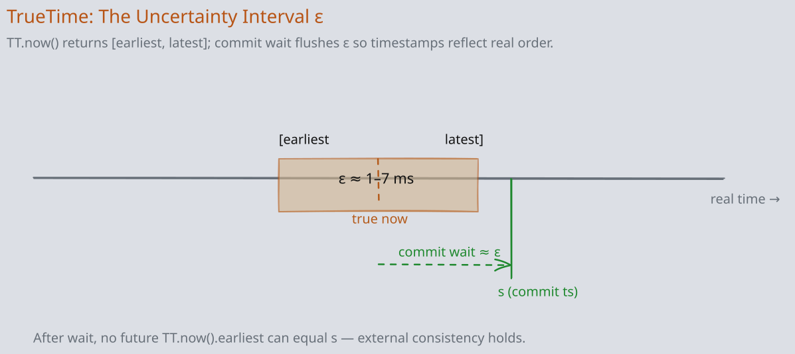
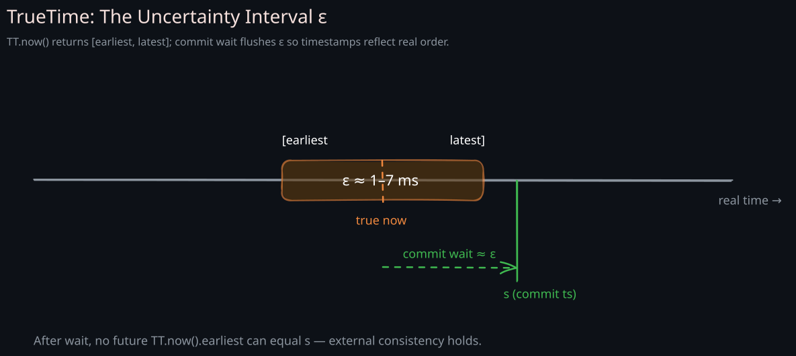
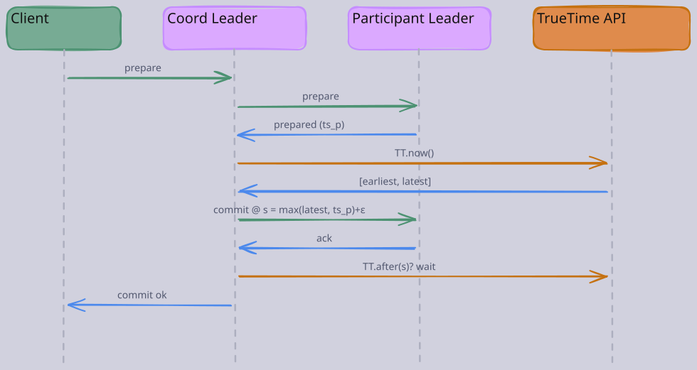
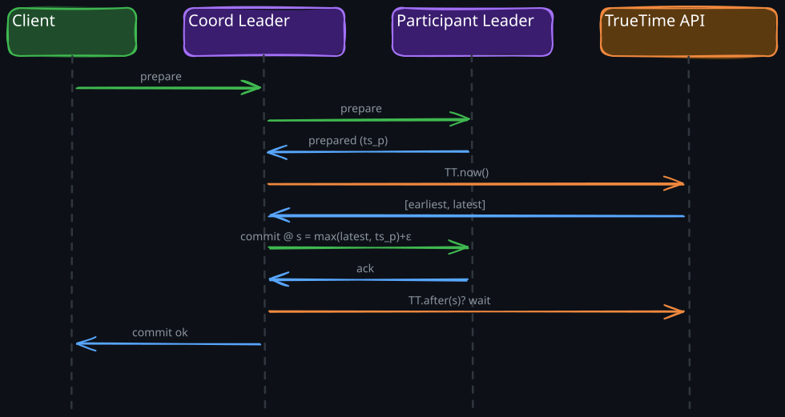
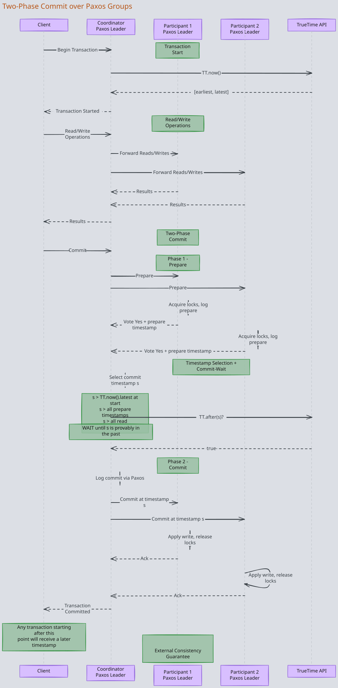
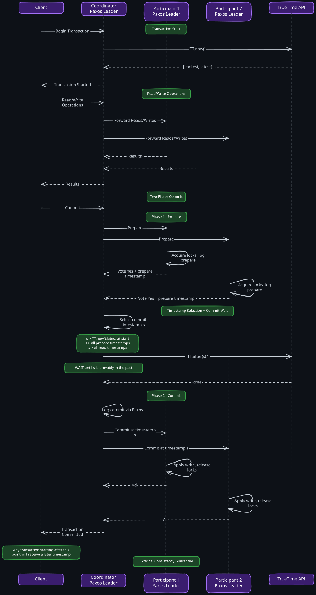

The Story
The real story of Spanner isn’t that Google uses atomic clocks — it’s why they need them. In Spanner, a transaction’s commit timestamp determines its global serialization order. To ensure no two data centers disagree on ordering, Spanner waits out the clock uncertainty window before acknowledging a commit. If TrueTime says uncertainty is plus or minus 4ms, the transaction literally sleeps for 4ms. Google didn’t solve a computer science problem. They made the problem smaller — by deploying GPS receivers and atomic clocks in every data center to shrink the uncertainty window — until existing algorithms worked. They traded physics hardware for a theoretical shortcut that nobody else can replicate.
Every distributed database faces a fundamental tension: you want data spread across the globe for latency and availability, but you also want transactions that behave as if everything were on a single machine. Traditional systems force you to choose — either strong consistency with single-region deployment, or global distribution with weak consistency. Spanner is Google’s answer to this dilemma: a globally distributed, strongly consistent, relational database that provides external consistency (stronger than linearizability) without sacrificing horizontal scalability.
The key innovation that makes this possible is TrueTime, a globally synchronized clock API with bounded uncertainty. TrueTime lets Spanner assign globally meaningful timestamps to transactions, which is the mechanism that turns an inherently distributed system into one that appears to operate as a single, ordered timeline.
Related Topics: 02-CAP-and-PACELC, 03-Consistency-Models, 05-Distributed-Transactions, 03-Consensus-Algorithm
1. The Globally Consistent Database Problem
To understand Spanner’s design, start with why this problem is so hard.
The single-machine baseline: On one database server, transactions are trivially ordered. The server processes them sequentially (or uses concurrency control to produce an equivalent serial order). Every read sees the latest committed write. There is one clock, one log, one source of truth.
The distributed challenge: Spread data across datacenters in different continents and everything breaks. Clocks drift apart (even NTP has milliseconds of error). Network latency means a write committed in Virginia may not be visible in Tokyo for tens of milliseconds. If two transactions execute concurrently in different datacenters, which one happened first? Without a consistent notion of time, there is no consistent ordering.
Why existing solutions fell short:
- Traditional RDBMS (MySQL, PostgreSQL): Strong consistency but single-region. Cannot scale writes globally.
- NoSQL systems (Cassandra, DynamoDB): Global distribution but eventual consistency. Applications must handle conflicts and stale reads.
- Two-phase commit across regions: Provides strong consistency but is slow (cross-region round trips) and blocks during coordinator failures.
Spanner’s position in the consistency spectrum is: External consistency > Linearizability > Sequential consistency > Causal consistency > Eventual consistency. External consistency is the strongest possible guarantee — if transaction T1 completes before transaction T2 starts (in real wall-clock time), then T1’s timestamp is guaranteed to be less than T2’s. This is what makes Spanner unique among distributed databases.
2. Architecture
Spanner’s architecture is a hierarchy of components, each serving a specific purpose in the distributed system.




1. Universe
A universe is the entire Spanner deployment. Google runs a production universe and a test/development universe. The universe master is a console for displaying status information about all zones. The placement driver handles automated movement of data across zones to balance load and meet replication constraints.
The uncertainty interval ε is the whole game — picture it on a real-time axis with the commit-wait period flushing it out:


2. Zones
A zone is the unit of administrative deployment, roughly corresponding to a datacenter (though a datacenter can host multiple zones). Each zone contains:
- A zone master: Assigns data to spanservers within the zone
- Hundreds to thousands of spanservers: Serve data to clients
- Location proxies: Help clients locate the spanserver responsible for their data
Zones are the unit of physical isolation. Adding or removing zones is how administrators control which datacenters replicate which data.
3. Spanservers and Tablets
Each spanserver manages 100 to 1000 tablets. A tablet is a container for a bag of key-value mappings: (key: string, timestamp: int64) -> value: string. Unlike Bigtable tablets, Spanner tablets assign timestamps to data, which is the foundation for Spanner’s versioned, multi-version concurrency control.
Each tablet is replicated using a Paxos group. One replica is elected as the Paxos leader and handles reads and writes for that tablet’s data. The leader maintains a lock table for concurrency control and a transaction manager for distributed transactions that span multiple Paxos groups.
4. Directories
A directory is the unit of data placement — a set of contiguous keys that share a common prefix. Directories are the granularity at which Spanner moves data between Paxos groups. The placement driver can move a directory from one Paxos group to another to rebalance load or to bring data closer to its users. This movement happens in the background using a protocol called Movedir, which is not a single transaction but a background task that moves data in chunks while continuing to serve reads and writes.
3. TrueTime: The Key Innovation
The fundamental problem TrueTime solves is this: in a distributed system, you cannot know the exact current time. Clocks drift, NTP synchronization has error bounds, and there is always uncertainty about what “now” really means. Most distributed systems try to minimize clock skew. Spanner takes a different approach — it measures and exposes the uncertainty.
1. The TrueTime API
TrueTime provides three functions:
TT.now(): Returns an interval[earliest, latest]that is guaranteed to contain the actual current timeTT.after(t): Returns true if timethas definitely passedTT.before(t): Returns true if timethas definitely not arrived yet
The uncertainty interval (called epsilon) is typically under 7 milliseconds. Google achieves this by deploying two types of time references in every datacenter:
- GPS receivers: Provide accurate time from satellite signals. Multiple receivers per datacenter for redundancy.
- Atomic clocks: Maintain stable time independently of external signals. Protect against GPS failures (jamming, antenna issues, spoofing).
Each datacenter runs a set of time master servers (some with GPS, some with atomic clocks). Machines poll multiple time masters and use Marzullo’s algorithm to detect liars and compute a conservative uncertainty bound. The bound accounts for clock drift between polls (typically every 30 seconds) and communication delay to time masters.
2. Why Bounded Uncertainty is Sufficient
The insight is that you do not need perfectly synchronized clocks — you need to know how far off your clocks might be. If you know the uncertainty bound, you can wait it out. This is the commit-wait protocol: after choosing a commit timestamp, the coordinator waits until it is certain that timestamp is in the past (by waiting epsilon time). This waiting period is the “cost” of external consistency, and Google has engineered it down to a few milliseconds.
4. Transaction Types
Spanner supports three transaction types, each with different consistency, latency, and locking characteristics.
1. Read-Write Transactions
Full ACID transactions with external consistency. These use two-phase locking for concurrency control and two-phase commit for distributed coordination.
Write flow through Paxos:
- Client begins a transaction with a coordinator (the Paxos leader of one of the involved groups)
- Client performs reads (which acquire read locks) and buffers writes
- Client requests commit. The coordinator begins two-phase commit:
- Prepare phase: Coordinator sends prepare messages to all participant Paxos leaders. Each participant acquires write locks, logs a prepare record via Paxos, and votes yes/no.
- Timestamp selection: The coordinator chooses a commit timestamp that is (a) greater than
TT.now().latestat the start, (b) greater than any timestamp of data read, and (c) greater than any prepare timestamp from participants. - Commit-wait: The coordinator waits until
TT.after(commit_timestamp)returns true. This is the critical step that ensures external consistency. - Commit phase: The coordinator logs the commit via Paxos and notifies all participants, which apply the write and release locks.
Leader leases: Each Paxos leader holds a lease (default 10 seconds) that it must renew to remain leader. The lease mechanism interacts with timestamp assignment — a leader must not assign a timestamp beyond its lease expiry. This prevents a deposed leader from issuing timestamps that conflict with those of a newly elected leader.
2. Read-Only Transactions
Read-only transactions see a consistent snapshot of the database without acquiring any locks. This is a major performance advantage — they do not block or get blocked by read-write transactions.
How they work:
- The client declares the transaction as read-only
- Spanner assigns a read timestamp. For “strong” reads, this is
TT.now().latest— guaranteeing the read sees all previously committed transactions. For “bounded staleness” reads, the client specifies a maximum staleness bound. - Each Paxos group involved in the read uses its tablet’s safe time to determine if it can serve the read at the chosen timestamp. The safe time is the timestamp below which all future writes are guaranteed to have higher timestamps. If the safe time has not advanced past the read timestamp, the replica must wait.
- Because no locks are acquired, read-only transactions can execute on any replica (not just the leader), enabling geographic distribution of read load.
The key insight is that read-only transactions are timestamp-ordered, not lock-ordered. The timestamp tells each replica exactly which version of the data to return, eliminating the need for coordination between replicas during the read.
3. Snapshot Reads
Snapshot reads allow reading data at a specific timestamp in the past.
- Exact staleness: Client specifies an exact timestamp. Useful for reading a consistent view of the database at a known point in time (auditing, debugging, time-travel queries).
- Bounded staleness: Client specifies a maximum age. Spanner picks a timestamp that satisfies the bound. This is useful when the client can tolerate some staleness in exchange for lower latency (the read can be served by a nearby replica without waiting for global replication).
Snapshot reads at sufficiently old timestamps can always be served locally because the safe time has long since advanced past the read timestamp.
5. Transaction Commit Sequence




6. External Consistency
Spanner provides external consistency, which is strictly stronger than linearizability. The distinction is subtle but important.
Linearizability: If operation A completes before operation B begins, then B sees the effects of A. This is defined in terms of single operations on single objects.
External consistency: If transaction T1 commits before transaction T2 starts (in real, physical wall-clock time), then T1’s commit timestamp is less than T2’s commit timestamp. This is defined in terms of entire transactions and real time.
The commit-wait protocol is what makes this work. By waiting until TT.after(commit_timestamp) returns true, Spanner ensures that any transaction starting after the wait completes will observe a later real time, and therefore receive a later timestamp. The uncertainty bound epsilon determines the wait duration — smaller epsilon means less waiting, which is why Google invested heavily in reducing clock uncertainty.
Without TrueTime, achieving external consistency would require coordinating with all servers globally before committing any transaction — essentially serializing all transactions through a single point, which would destroy performance. TrueTime replaces global coordination with a local wait, which is the fundamental performance insight.
7. Schema Design and Data Placement
1. Interleaved Tables
Spanner’s schema language allows declaring hierarchical relationships between tables using INTERLEAVE IN PARENT:
CREATE TABLE Users (
user_id INT64 NOT NULL,
name STRING(MAX),
) PRIMARY KEY (user_id);
CREATE TABLE Photos (
user_id INT64 NOT NULL,
photo_id INT64 NOT NULL,
caption STRING(MAX),
PRIMARY KEY (user_id, photo_id),
) INTERLEAVE IN PARENT Users ON DELETE CASCADE;This declaration means that a user’s photos are physically stored adjacent to the user’s row. The child table’s primary key must prefix with the parent’s primary key. When Spanner reads a user and their photos, it accesses contiguous storage — no cross-shard joins, no network round trips to other tablets.
When to use interleaving: Use it when the parent-child relationship has strong access locality — you almost always access children together with their parent. User-to-orders, post-to-comments, account-to-transactions are natural fits.
When not to use interleaving: Avoid it when child data is frequently accessed independently of the parent, or when the child data is very large (it would cause the parent’s split to be large). Also avoid it for many-to-many relationships — interleaving models strict hierarchies.
2. Directory-Based Data Placement
Directories (sets of contiguous keys with a common prefix) are the unit of data movement. Spanner’s placement driver uses directories to:
- Rebalance load: Move hot directories to less loaded servers
- Geographic placement: Move directories closer to their users based on access patterns
- Meet replication policies: Ensure directories satisfy their configured replication constraints (e.g., “5 replicas with at least 3 in Europe”)
The Movedir operation moves a directory from one Paxos group to another in the background. It is not a single transaction but a background task that transfers data in chunks. Reads and writes continue to be served during the move — the source group continues serving until the destination is ready, at which point a brief atomic switchover transfers ownership.
3. Split and Merge
When a tablet grows too large, Spanner splits it into two tablets at a directory boundary. When tablets become too small, they can be merged. Splits and merges happen transparently — clients are briefly redirected to the new tablet location. This automatic resharding is what allows Spanner to scale writes linearly with the number of machines.
8. Distributed Query Execution
Spanner includes a coprocessor framework that pushes query execution down to the spanservers holding the data. For a SQL query that spans multiple tablets, the query is decomposed into sub-queries, each sub-query executes locally on its tablet’s spanserver, and results are merged at a higher level.
This is similar to how MapReduce works: push computation to the data rather than moving data to the computation. For well-sharded queries (where the WHERE clause matches the sharding key), most work happens locally. For cross-shard queries (aggregations across all users, for example), Spanner must coordinate across spanservers, which is more expensive.
9. Performance Characteristics
| Operation | Typical Latency | Notes |
|---|---|---|
| Single-row read (same zone) | Sub-10ms | From Paxos leader, in-memory |
| Read-only transaction (single region) | 10-20ms | No locks, snapshot read |
| Read-only transaction (global) | 20-100ms | Must wait for safe time on remote replicas |
| Single-row write | 10-50ms (single region) | Paxos + commit-wait |
| Distributed write transaction | 100-500ms | 2PC across Paxos groups + commit-wait |
| Commit-wait overhead | ~7ms average | Dominated by TrueTime epsilon |
Write latency is dominated by two factors: Paxos consensus (cross-replica round trips) and commit-wait (TrueTime epsilon). For single-region deployments, write latency is 10-50ms. For globally distributed writes, cross-continent round trips add significantly.
Read throughput scales linearly by adding read-only replicas. Write throughput scales by adding shards (more Paxos groups). Spanner automatically rebalances to distribute load.
10. Comparison with Open-Source Alternatives
| Aspect | Google Spanner | CockroachDB | YugabyteDB |
|---|---|---|---|
| Clock mechanism | TrueTime (GPS + atomic clocks) | Hybrid Logical Clocks (HLC) | Hybrid Logical Clocks (HLC) |
| Consistency | External consistency | Serializable | Serializable (snapshot isolation default) |
| Commit protocol | 2PC + commit-wait | Parallel commits + clock skew bound | 2PC with provisional writes |
| Clock uncertainty | ~7ms (hardware) | ~250ms assumed max skew | ~500ms default max skew |
| Deployment | Google Cloud only | Self-hosted or cloud | Self-hosted or cloud |
| SQL compatibility | Google SQL dialect | PostgreSQL-compatible | PostgreSQL-compatible |
| Automatic sharding | Yes (directory-based) | Yes (range-based) | Yes (hash or range) |
The fundamental difference is the clock. TrueTime gives Spanner a tight uncertainty bound (~7ms), which means commit-wait is short and external consistency is practical. CockroachDB and YugabyteDB use hybrid logical clocks, which have no hardware backing — they must assume a conservative maximum clock skew (hundreds of milliseconds). This means they cannot provide true external consistency, though they achieve serializable isolation which is sufficient for most applications.
CockroachDB compensates for the lack of TrueTime with techniques like “uncertainty restarts” — if a read encounters a value with a timestamp within the uncertainty window, it restarts at a higher timestamp. This adds latency in contended workloads but avoids the need for specialized hardware.
11. CAP Theorem Position
Spanner prioritizes consistency and partition tolerance (CP in 02-CAP-and-PACELC). During a network partition, writes to the affected Paxos groups are blocked until the partition heals and a quorum can be formed. Spanner does not sacrifice consistency for availability.
However, Spanner achieves remarkably high availability in practice — Google reports 99.999% availability (five nines). This is possible because:
- The underlying network infrastructure (Google’s private global network) has very few partitions
- Paxos groups span multiple failure domains, so individual machine or rack failures are tolerated without partition
- Leader leases and fast re-election minimize downtime during leader failures
Spanner demonstrates that with sufficient engineering investment in infrastructure, the practical limitations of CAP can be pushed close to their theoretical limits.
Revision Summary
Spanner is Google’s globally distributed, externally consistent relational database. Its key innovation is TrueTime, a clock API backed by GPS receivers and atomic clocks that provides bounded time uncertainty (typically under 7ms). External consistency — stronger than linearizability — guarantees that if T1 commits before T2 starts in wall-clock time, T1’s timestamp is always less than T2’s. This is achieved via the commit-wait protocol: after selecting a commit timestamp, the coordinator waits until TrueTime confirms the timestamp is in the past. The architecture is hierarchical: universes contain zones, zones contain spanservers, spanservers manage tablets replicated via Paxos groups. Read-write transactions use 2PC across Paxos groups with commit-wait. Read-only transactions use snapshot reads at a chosen timestamp without locks, enabling them to execute on any replica. Interleaved tables provide physical co-location for parent-child data. Directories are the unit of data movement for rebalancing and geographic placement. Open-source alternatives (CockroachDB, YugabyteDB) use hybrid logical clocks instead of TrueTime, achieving serializable isolation but not external consistency.
Deep Understanding Questions
-
Commit-wait and latency: The commit-wait protocol adds TrueTime epsilon (~7ms) to every write transaction. If Google’s TrueTime uncertainty increased to 100ms (due to GPS outage, falling back to atomic clocks only), what would happen to write throughput and latency? How does this reveal the coupling between infrastructure investment and database performance? Ans:
-
Read-only transaction timestamp selection: When a read-only transaction chooses
TT.now().latestas its read timestamp, it may need to wait for some Paxos groups to advance their safe time. What causes a Paxos group’s safe time to lag, and how does this create a dependency between read-only and read-write transactions despite them not sharing locks? Ans: -
Leader lease and timestamp interaction: Why must a Paxos leader not assign a timestamp beyond its lease expiry? What catastrophic scenario could occur if a deposed leader assigned a future timestamp, a new leader was elected, and both assigned conflicting timestamps? Ans:
-
Interleaved tables and hot spots: If a Users table has one user with millions of photos (a celebrity account), and Photos is interleaved in Users, what happens to the tablet containing that user? How does Spanner handle this, and what are the limitations of interleaving for highly skewed data distributions? Ans:
-
TrueTime vs HLC tradeoffs: CockroachDB uses hybrid logical clocks with a 250ms assumed maximum clock skew, while Spanner uses TrueTime with ~7ms uncertainty. What specific user-visible behaviors differ? In what scenarios would CockroachDB’s uncertainty restarts cause problems that Spanner’s commit-wait would not? Ans:
-
Movedir and consistency: When the placement driver moves a directory from one Paxos group to another, reads and writes continue during the transfer. How does Spanner maintain consistency during this transition? What happens to a write that arrives during the atomic switchover? Ans:
-
Split-brain prevention in Paxos: Spanner uses Paxos (not Raft) for replication. In what ways does the leader lease mechanism complement Paxos’s quorum-based safety? Could a scenario arise where the leader lease and the Paxos quorum disagree about who the leader is? Ans:
-
Snapshot reads and garbage collection: Spanner maintains multiple versions of data to support snapshot reads. How does it decide when to garbage collect old versions? What happens if a long-running read-only transaction tries to read at a timestamp whose data has already been garbage collected? Ans:
-
Global vs local transactions: A transaction that touches data in a single Paxos group avoids 2PC entirely (the Paxos leader can commit unilaterally). How much faster is this than a distributed transaction? What schema design principles would you follow to maximize the fraction of transactions that are single-group? Ans:
-
Five nines without sacrificing consistency: Spanner claims 99.999% availability while being CP. How is this possible given CAP theorem? What assumptions about Google’s infrastructure make this achievable, and would the same availability numbers hold if Spanner were deployed on a public cloud with standard networking? Ans: